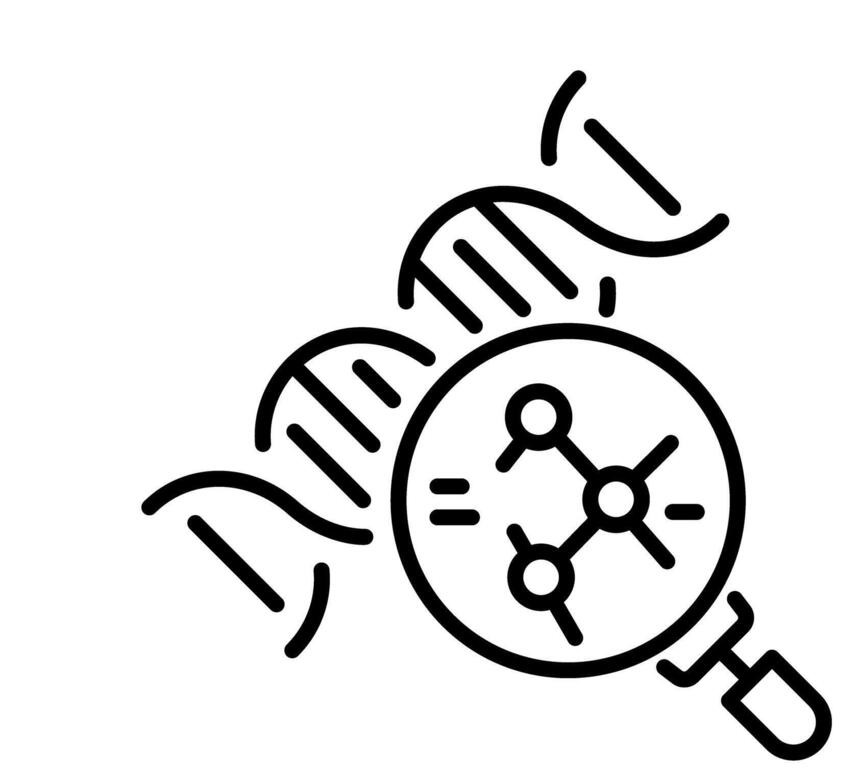
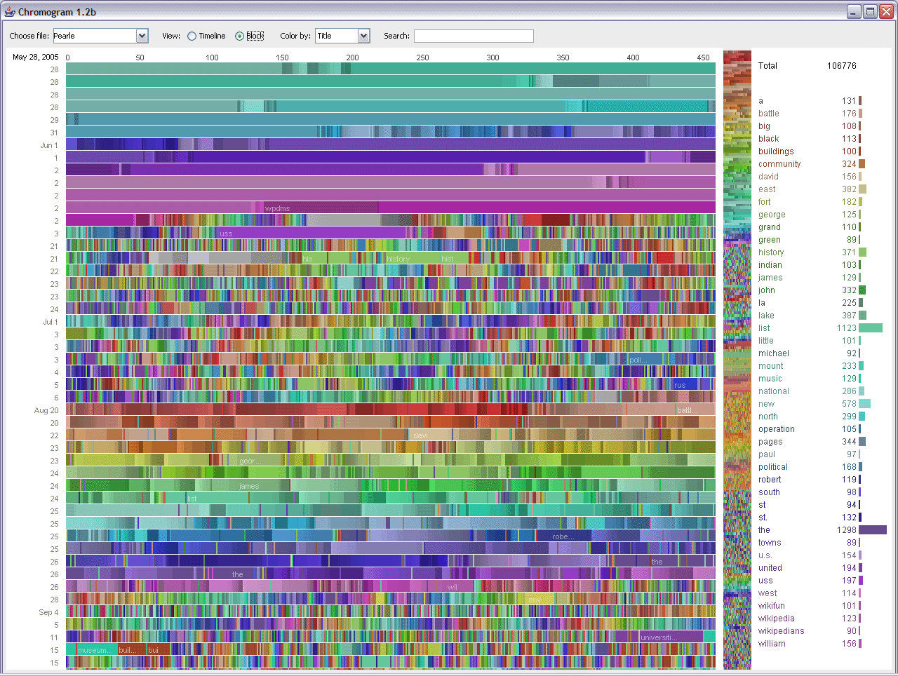
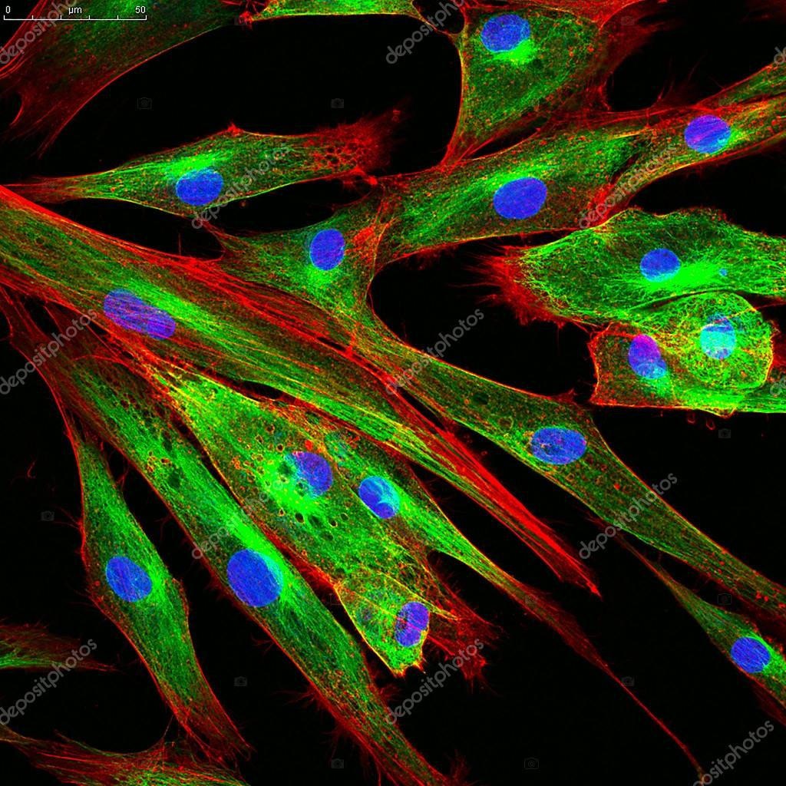

2015-2018
2013
Master sciences de la vie : spécialité biotechnologie végétale
Sujet : Caractérisation fonctionnelle de TRH dans la réponse au stress abiotique chez le blé.
Superviseur : Dr. Chantal EBEL
Compétences clés

Biologie moléculaire
Extraction et purification d’ADN/ARN, PCR, qPCR, RT-PCR, Clonage et mutagenèse, Électrophorèse, Southern/Northern/Western blot, Manipulation génétique de bactéries et cellules végétales
 Physiologie
Expériences en conditions contrôlées (chambres de cultures, serres), tests de germination et suivi de la croissance, tests stress abiotiques (salinité, sécheresse), Dosage des composés secondaires (SOD, proline, polyphénols)
Physiologie
Expériences en conditions contrôlées (chambres de cultures, serres), tests de germination et suivi de la croissance, tests stress abiotiques (salinité, sécheresse), Dosage des composés secondaires (SOD, proline, polyphénols)

Analyse de données
Statistiques biologiques,utilisation de logiciels (R, python, excel), analyse et interprétation de données de RNAseq,

Biologie cellulaire
microscopie confocale, Immunomarquage et immunofluorescence, FISH, DAPI, culture cellulaire végétale et bactérienne
Omiques
Extraction, purification et quantification des protéines, Préparation d’échantillons pour séquençage haut débit (NGS : RNAseq, DNAseq,),analyses bioinformatiques,visualisation de données, génomique,
Publications
-
Transcriptome meta-analysis of abiotic stresses-responsive genes and identification of candidate transcription factors for broad stress tolerance in wheat
Protoplasma 2022 Sep 260(3):1-15(Impact factor 2025 => 2,5)
Voir le DOI -
Genome-wide identification of wheat and Brachypodium type one protein phosphatases and functional characterization of durum wheat TdPP1a.
PLoS One 2018 Jan 16;13(1):e0191272.(Impact factor 2025 => 2,6)
Voir le DOI -
Molecular and functional characterization of the durum wheat TdRL1, a member of the conserved Poaceae RSS1-like family that exhibits features of intrinsically disordered proteins and confers stress tolerance in yeast
Funct Integr Genomics 2015 Nov;15(6):717-28.(Impact factor 2025 => 3)
Voir le DOI -
The wheat TdRL1 is the functional homolog of the rice RSS1 and promotes plant salt stress tolerance
Plant Cell Rep. 2018 Dec;37(12):1625-1637.(Impact factor 2025 => 4)
Voir le DOI
Conférences / Présentations
-
Poster : The wheat gene TdRL1 is the functional homolog of Arabidopsis PATRONUS that ensure proper chromosome segregation during salt stress through kinetochore microtubule association
Bilateral Closure Symposium of GDRI Integrative Plant Biology Network, Lyon, 23, 24 et 25 Octobre 2017 -
Communication orale : Modulation de la croissance par le stress : Relation de TdRL1 avec les réseaux MTs en imagerie 3D.
Symposium Imagerie 3D, Strasbourg, 04 Avril 2017 -
Poster : Novel insights into the nuclear environment to orchestrate centromeric architecture in Arabidopsis.
Epigenetic & chromatin regulation of plants traits, Strasbourg, 15 et 16 Janvier 2016
Cours / Formations
-
Cours pratique Bioinformatique “NGS DATA ANALYSIS”
29, 30 Septembre et 03 Octobre 2016, CNRS-Strasbourg, FR -
NGS data analysis and protein modeling bioinformatics course
29 juillet - 07 Aout 2015, Institut Pasteur Tunis, TN -
NGS data analysis on the unix command line, small-RNAseq and RNAseq
13, 14, et 15 Novembre 2017, IBMP-Strasbourg, FR -
Techniques de purification de protéines par chromatographie liquide
26, 27 Avril 2017, ESBS-Strasbourg, FR -
Logiciel R - Premiers pas et tests statistiques
25, 26 et 28 Janvier 2016, ESBS-Strasbourg, FR -
PCR Quantitative
29, 30 Mars 2017, CNRS-Strasbourg, FR